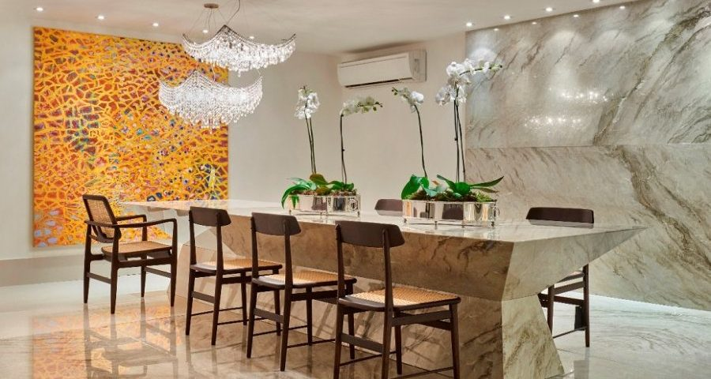

Pedras e superfícies
Granitos, mármores, quartzitos e superfícies de quartzo para diferentes estilos de projeto.
Explore modelos, compare cores e selecione seus favoritos. Depois, envie sua seleção diretamente pelo WhatsApp para solicitar seu orçamento.

SELEÇÃO MMG Seu ambiente começa na escolha da pedra.O catálogo apresenta as opções disponíveis no material enviado pela MMG, organizadas para facilitar a escolha do cliente.
Granitos, mármores, quartzitos e superfícies de quartzo para diferentes estilos de projeto.
Modelos esculpidos, de sobrepor e semi encaixe para complementar bancadas e lavabos.
Produtos complementares para integrar perfeitamente ao seu projeto.
Use os grupos abaixo para navegar rapidamente pelo catálogo e encontrar tons que conversem com seu ambiente.
Marque os modelos que você gostou no catálogo. Ao clicar em “Enviar seleção”, o WhatsApp será aberto com os nomes escolhidos, prontos para você continuar o atendimento.
Nenhum modelo selecionado ainda.
Entre em contato pelo WhatsApp para tirar dúvidas, enviar sua seleção e solicitar atendimento.